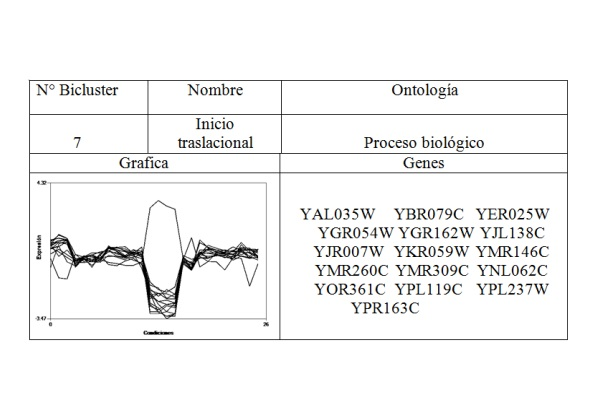
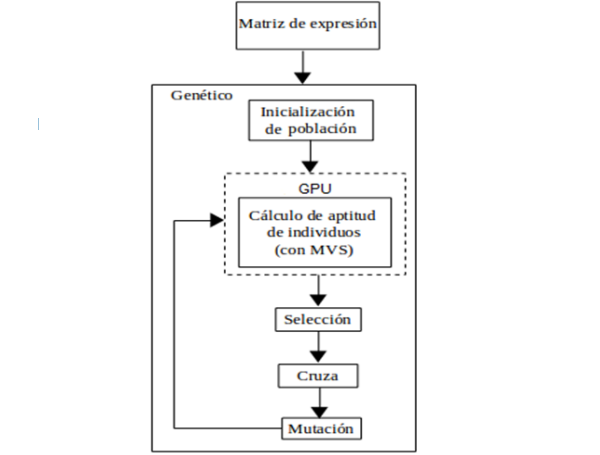

I am a Systems Engineer with a Master's degree in Computational Systems.
In my engineering thesis, I worked with biclusters, and in my master's thesis, I developed a genetic algorithm with a support vector machine as the objective function, running in parallel using CUDA.
Búsqueda de biclusters con significancia biológica basada en la identificación de patrones de comportamiento
Palabras clave: biclustering, expresión de genes, significancia estadística, patrones de comportamiento en espejo.


Algoritmo genético paralelo para la clasificación de subtipos de cáncer
Palabras clave: máquinas de soporte vectorial, expresión genética, CUDA, algoritmos genéticos, clasificación de cáncer.
Proximamente.
Envíame un correo a: skepsis.desarrollo@gmail.com